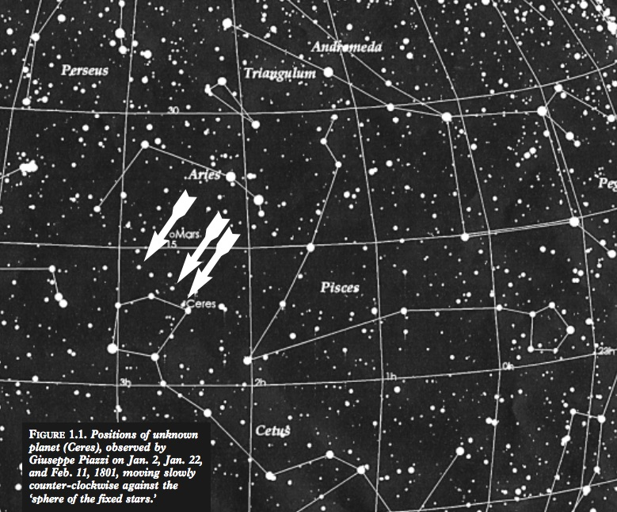
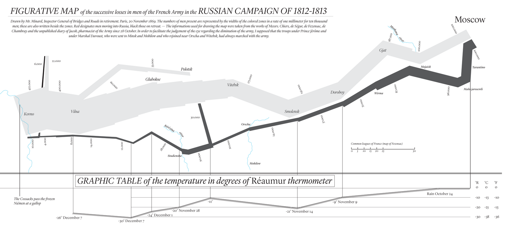
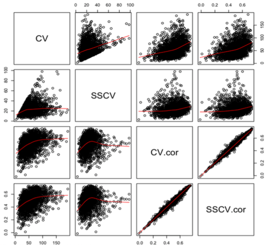
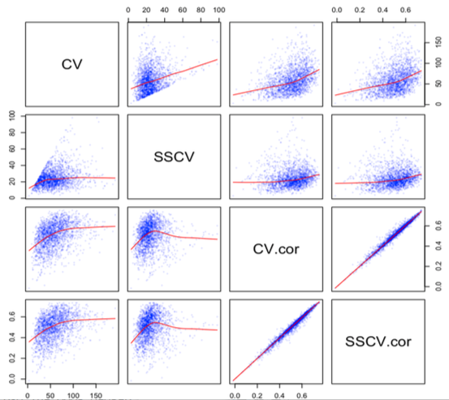
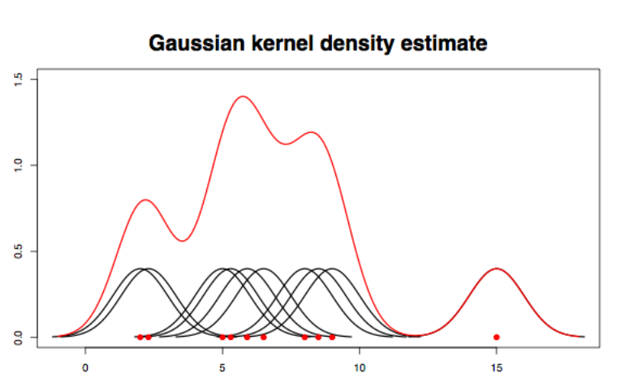
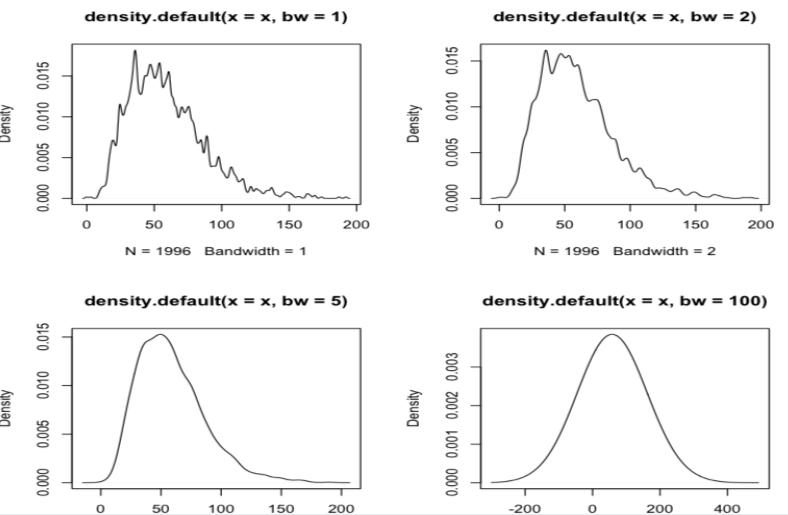
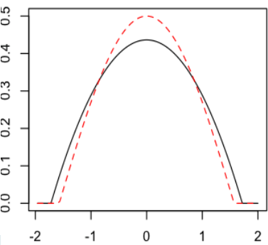
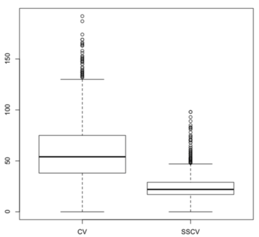
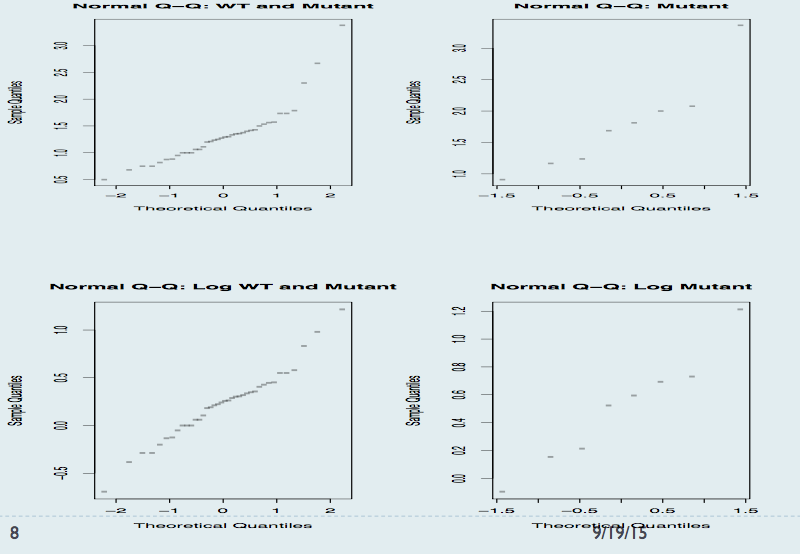

The term "exploratory data analysis" was brought into popular use by John W. Tukey via his book of the same name, although we would be misguided if we claimed that no-one plotted their data before Tukey came along. Visual data exploration dates back thousands of years give a brief summary of the history. Humans are very visual, a large part of our brain is based on processing and interpreting what we see and we are extremely good at making judgments based on visual prompts.
So what should we be visualizing?
raw data
summaries of your data
transformations of your data
results of your models or algorithms
Essentially at every step of your analysis, you can do some visualization. Visualization is a great way to identify the range of your data, as well as any problems with your data: perhaps there are missing values coded as a particular integer (perhaps as "0" or "999"), or strange values (perhaps someone mistyped a number). It is always a good idea to mix visualization with modelling (don't simply visualize your data and then proceed to modelling and assume that the visualization stage is over!).
In A tour through the visualization zoo by Jeffrey Heer, Michael Bostock and Vadim Ogievetsky (2010), the authors quote that
"Well-designed visual representations can replace cognitive calculations with simple perceptual inferences and improve comprehension, memory, and decision making. By making data more accessible and appealing, visual representations may also help engage more diverse audiences in exploration and analysis. The challenge is to create effective and engaging visualizations that are appropriate to the data."
Quotes by William Cleveland:
“Visualization is critical to data analysis. It provides a front line of attack, revealing intricate structure in data that cannot be absorbed in any other way. We discover unimagined effects, and we challenge imagined ones.”
“There are two components to visualizing the structure of statistical data – graphing and fitting. Graphs are needed, of course, because visualization implies a process in which information is encoded on visual displays. Fitting mathematical functions to data is needed too. Just graphing raw data, without fitting them and without graphing the fits and residuals, often leaves important aspects of data undiscovered.”
Expand on these and make more connections!
In summary: Visualization should be your first choice for your analysis when writing papers, giving presentations and for life.
In 1801, Giuseppe Piazzi, an Italian Catholic priest, mathematician and astronomer, observed three sightings of a new "planet", and he recorded its positions in the sky and the time at which he saw it. The image below from Tennenbaum and Director, 1997 shows the three positions of Ceres observed by Piazzi. This is an example of visualization of data. It's not just boxplots and histograms (although they are informative too), we also want to simply look at what we are analyzing. What he observed was that this particular planet was moving slowly counter-clockwise against the "sphere of the fixed stars". This would have been very difficult to convey in text or numerical form, this visual representation is the most informative way of representing this data. We are given context such as the location of other stars relative to the new planet.

Piazzi was in fact making a lot of assumptions based on his observations. He assumed that the planets observed at the three different locations were the same, but why? There are a lot of alternative theories he could have come up with.
In fact it was Carl Friedrich Gauss, a German mathematician and physical scientist who made significant contributions to many fields (including number theory, algebra, statistics, analysis, differential geometry, geophysics, electrostatistics, astronomy and optics) who actually showed, using Piazzi's three data points, that the three planets observed by Piazzi were one in the same; Ceres. He used Kepler's second law of planetary motion to describe the trajectory of Ceres.
In fact, Gauss was using Least Squares (put in link) to describe Ceres' trajectory. Isn't it amazing that these Gauss and Piazzi were able to get so much information from only three data points. They certainly didn't need "big data"! It's not really about how much data you have, but rather it's about how much information each observation contains.
You could write entire books to even summarize the events in Napoleon's invasion of Russia, but to obtain a concise, yet complete, summary, visualization offers far superior tools as Charles Minard's map (below) shows. Here, Minard is able to simultaneously plot in two dimensions six different types of data. The plot contains substantial amounts of information about the progression of Napoleon's army. There is geographic information (the distance traveled, the longitude and latitude), the direction of travel, the number of troops in Napoleon's army, the temperature and the location relative to specific dates.

However, not all graphics are created equal. Below we show another example of a plot designed to show the same information. Although Minard's plot above removes some of the detailed geographical information, it actually portrays the the viewer the information in a more concise but substantially more interpretable and understandable way. The map below is too noisy and cluttered that it becomes confusing and it is difficult to extract the useful information.
There are a wide array of tools available in multiple programming languages for visualizing data. The examples we present are based on the R programming language.
There are a number of considerations that one should take into any plotting adventure. Here we list a few: Fix up!
Continuous values are better mapped into continuous gradient scales, whereas discrete colors should be used to represent different categories.
Bright colors draw attention better than dull colors. For example, if you wish to have the viewers attention drawn to a particular point, color it in a bright color!
Transparency and point size (for example in scatterplots) should be utilized for large datasets so that more information can be portrayed without overplotting becoming an issue.
A smoothing line provides information about the overall trend present in scatterplots or time series plots, especially when there are many data points overplotted on top of one another.
Brushing can be used to effectively bring in other variables.
Motion (such as movies) an bring out structures that static representations cannot.
If you're using R, you should really be using the data visualization package ggplot2 designed by Hadley Wickham rather than the base R plotting tools. Many of the above considerations can be irritatingly difficult to achieve in most plotting languages but are incredibly easy and natural (not to mention aesthetically pleasing!) with ggplot2.
Often the most effective visualization tools are the simple ones.
Scatterplots are likely to be one of the first types of exploratory data analysis that you were exposed to. Traditional scatterplots involve plotting one variable against another, however as data is becoming more and more complex, many extensions to this traditional, yet useful, plot have begun to take hold. For example, making use of transparency and color is an extremely useful way to demonstrate concentrations of points as well as categorical information and may even add another continuous variable into the plot.
For example, the plot below shows a number of scatterplots without transparency. There are so many points plotted on top of one another that it becomes difficult to visually determine the trend.

When we add transparency, it becomes much easier to identify patterns in the data as well as regions where the data are more condensed.

Further, the above plots each contain a red smoothing line, which can be extremely useful to emphasize the trend of the data. We will come back to the notion of smoothing later.
What if, instead of looking at histograms, we estimated the density and plotted that instead:

The above example corresponds to Gaussian kernel density estimation for 10 data points (the red points plotted along the x-axis). For each data point, a Gaussian curve is plotted centered at the data point (these are the black curves). The spread of the curves is defined by the bandwidth (see blow). The Gaussian kernel density estimate (the red curve) is then obtained by adding the height of the black curves.
Although in the example above, we have used Gaussian curves, there is no need to make this restriction. To define the general kernel density estimator, we first define a 1-dimensional kernel function, $K(\cdot)$, which satisfies $$\int K(t) dt = 1 ~~~~~~~ \int t K(t) dt = 0$$
That is, we can think of the kernel function as a density that integrates to 1 and that corresponds to distribution has expected value 0. For the Gaussian example above, this would be the Gaussian density function.
We next define the re-scaled kernel function with bandwidth $h$ (the bandwidth describes the spread of each individual curve) to be $$K_h(t) = \frac{1}{h} K\left( \frac{t}{h} \right)$$
so that a kernel density function of data (where we can notationally define the data by $x_1, x_2, ..., x_n$) is defined to be $$g_{n, h}(x) = \frac{1}{n} \sum_{i=1}^n K_h(x_i - x)$$
From the formula above, we can see that the height of the kernel density estimator curve at a given $x$ is influenced by the height of each individual kernel curve at our data point $x_i$ for $i = 1, ..., n$ (note that $x$ is our parameter, which we vary to trace out the kernel density curve, while the $x_i$ are the individual data points). In particular, assuming that the individual kernel functions, $K_h$, are centered at $x_i$, then the closer our location, $x$, is to a given point $x_i$, the more height the kernel function for $x_i$ will contribute.
The tuning parameter is the bandwidth, $h$. A small $h$ corresponds to very condensed spread (as if you're squeezing the kernel function), and a large $h$ corresponds to an elongated spread.

It is easy to implement kernel smoothing estimators in R, and the only hard part stems from choosing the value bandwidth, $h$. There is currently no overall method for automatically selecting the bandwidth, and in general it is recommended that you try several and use your judgement to choose which one is the best fit for the data. For example, in the image above, the bandwidth of 1 is far too small, it is capturing all of the noise in the data.
Note that we often call the bandwidth, $h$, a regularization parameter (we will see this again when discussing lasso and ridge linear models). Regularization parameters typically represent a tradeoff between bias and variance in our estimation. For example, from the image above, we see that the kernel density estimators with small bandwidth have very high variance (the curve jumps around a lot), but low bias (on average, the value of the kernel is close to the true value of the density). On the other hand, the kernel density estimators with large bandwidth have very low bias (the curve is very smooth and much less noisy) but have high bias (on average, the value of the kernel estimator might be quite far from the true value of the density).
By using kernel density estimation we are in essence assuming that our data are realizations of a sequence of random variables, $X_1, X_2, ..., X_n$. It is important to question whether this even makes sense for the data at hand. If the answer is yes, begin to pry information such as what is the sampling model? Where does the randomness come from?
Let's change the notation for our kernel density estimation by assuming that our observations are in fact realizations of random variables, $X_1, X_2, ..., X_n$, with a density function, $f$. Then kernel density estimation is trying to estimate $f$ using
$$\hat{f}_{n, h}(X) = \frac{1}{n} \sum_{i=1}^n K_{h}(X_i - x)$$
Is $\hat{f}_{n,h}(x)$ a random variable? Yes is is, because it is a function of the random variables $X_i$. Is $\hat{f}_{n, h}(x)$ a good estimator for $f$? Firstly, the answer to that question depends on what we mean by "good": do we mean an estimator with low bias, an estimator with low variance, or perhaps a combination of the two?
We mentioned above that short bandwidths correspond to an estimator, $\hat{f}_{n, h}(x)$, of $f$ that has low bias, but high variance, whereas long bandwidths corresponds to an estimator that has high bias but low variance. Is one of these two extremes better than the other? Is it possible to obtain a happy mid-ground between the two? This is where the bias/variance trade-off comes in: perhaps we would rather find an estimator that minimizes a combination of the bias and the variance, such as the mean squared error (MSE):
$$\text{MSE} = \text{Bias}^2 + \text{Variance}$$
In fact, in modern statistics, gains are often obtained by increasing bias, but reducing variance. We can add a regularization (or smoothing) parameter to control the trade-off between bias and variance (we will return to this concept when we discuss the lasso linear model).
In particular, the mean squared error for the kernel estimator can be approximated by
$$ \begin{aligned} \text{MSE} &= \text{Bias}^2 + \text{Variance} \\ & \approx \left[ \frac{1}{4} \sigma^4_K \left(f^{\prime \prime}(x)\right)^2\right] h^4 + \frac{1}{nh} \left[ \int K(u)^2 f(x) du \right] \end{aligned} $$
which shows that the bias increases with the bandwidth, $h$, while the variance decreases with $h$.
The mathematical steps are presented in the appendix at the end of this section for curious readers, but could easily be skipped without much loss of conceptual understanding.
Next, the pointwise MSE risk function above can be shown to be optimized asymptotically by a bandwidth (depending on $x$) given by
$$h^*(x) = \left( \frac{c_2(x)}{c_1^2c_3(x) n} \right)^{\frac15}$$
where
$$c_1 = \int t^2 K(t) dt = \sigma^2_K, ~~~~~~ c_2(x) = \int K^2(t) dt f(x), ~~~~~~ c_3(x) = \left(f^{\prime \prime}(x) \right)^2$$
Kernel density estimation is well-known to perform poorly at the boundaries of your dataset where there is little data available. The algorithm tends to extrapolate out from the denser regions.
Further, does there exist an optimal kernel function. In our introductory example, we used a normal density with variance 1, but how do we know that a normal density with variance 2 wouldn't be better? In the end, this wouldn't make any difference, it would just correspond to a scale change. In fact, Maron and Nolan's (1989) work showed that the optimal kernel was that which minimizes
$$T(K) = \left\{ \| K \|_2^8 \sigma^2_K \right\}^{\frac15}$$
and that this optimal kernel is given by the Epanechnikov kernel:
$$K(t) = \frac34 \frac{1}{5^{1/5}} \left( 1 - \left(\frac{t}{15^{1/5}}\right)^2\right) I_{\left(\vert t \vert \leq 15^{1/5}\right)}$$
However, the asymptotic efficiency lost for other kernels is minimal. In fact R uses the cosine kernel below, which has an efficiency ratio of 1.0004 relative tot he optimal:
$$K(t) = \frac12 \cos(t) I_{\left(\vert t \vert \leq \frac{\pi}{2}\right)}$$
In the figure below, the black curve is the Epanechnikov kernel function and the red curve is the cosine kernel function.

The optimal (minimax) MSE rate for smooth density functions with $s$-derivatives is $O\left( n^{-\frac{2s}{2s + d}}\right)$, where $d$ is the dimension and $s$ is the smoothness. When $s$ gets large (so that the density function is really smooth), we get a rate close to $\frac{1}{n}$, which is the familiar parametric (assuming normality) rate. When $d$ is large (the data is high-dimensional), then $\frac{2s}{2s + d} \rightarrow 0$, implying a very slow rate. In essence: if your data does not have a low-dimensional structure, then estimating its density function is hopeless!
For example, if your data has 26,000 dimensions (not uncommon in bioinformatics data), and $s = 1$ with $n = 2,000,000$, then our rate is $2,000,000^{-\frac{2}{26,000}} = 0.9988846$, which is very far from 0!
In fact, it is an active research area to attempt to find informative low-dimensional structures that are embedded in high dimensions. In many cases where we have "big data", the datasets themselves are huge, but we are really interested in the hidden, low-dimensional structures contained within.
We mentioned that it is often a good idea to add a smoothing line to scatterplots. But how do we come up with the smoothing line? There are actually a number of methods, but we can use kernel density estimation.
For example, given pairs of data points $(x_i, y_i)$, $i = 1, ..., n$, where $x_i$ might be a father's height and $y_i$ might be his son's height. Suppose that we are interested in predicting the son's height based on the father's height. Then we might fit a model which predicts $y$ based on $x$ using the Nadaraya-Watson kernel smoother with bandwidth $h$:
$$\hat{y}(x) = g_h(x) = \frac{\sum_{i=1}^n K_h(x_i - x) y_i}{\sum_{i=1}^n K_h(x_i - x)}$$
This equation corresponds to a predicting $\hat{y}$ given some value $x$ to be the weighted average of the $y_i$'s where $y_i$'s which have correxponding $x_i$'s that are close to our $x$ of interest have larger weights and thus contribute more (since $K_h$ is centered about $0$).
For any fixed $x$ value, the above prediction for $\hat{y}$ corresponds to finding the (local) constant minimizer of a weighted least-squares over $\theta$:
$$\hat{y} = \underset{\theta}{\text{argmin}} \sum_{i=1}^n (y_i - \theta)^2 w_i(x) ~~~~~~ \text{where} ~~~~~ w_i(x) = K_h(x_i - x)$$
That is, for each fixed $x$, we want to find the value, $\hat{y}$, which is the closest (in terms of the squared distance) to the $y_i$'s whose corresponding $x_i$'s are close to our $x$ of interest. This needs to be re-worded!. We can call this function a "smoothing" function, since it is taking into account all possible values that we have observed and averaging them based on how close their $x_i$'s are. Make Figures!
Instead of finding a constant fit, we could instead do a local polynomial fit, for example, finding
$$\hat{y} = \underset{\theta}{\text{argmin}} \sum_{i=1}^n \left(y_i - \sum_{j=1}^p \beta_j(x_i - x)^j\right)^2 w_i(x) ~~~~~~ \text{where} ~~~~~~ w_i(x) = K_h(x_i - x)$$
where $p=0$ gives the NW kernel smoother, $p=1$ gives the local linear smoother. The idea is that you want to fit a local polynomial to a subset of the data near the point whose response is being estimted. The polynomial is fitted using least squares, giving more weight to the points near the point whose response is being estimated, and less weight to points further away. Give examples of polynomial smoothing for different weights and different degrees.
Similar to our discussion of kernel density estimation above, we can use Taylor expansion to obtain the bias and variances of these kernel smoothers:
Suppose that we are estimating a function $f$ using a non-parametric regression model
$$Y_i = m(X_i) + \epsilon_i$$
where $m$ is a "smooth" mean function and $\epsilon$ is the error term with mean zero. Assume that $X_i$ and $Y_i$ are IId and $X_i$ jas a density $f$ and $Var(Y | X = x) = \sigma^2$, then under necessary regularity conditions we have the following (pointwise) bias-variance tradeoff:
For the Nadaraya-Watson kernel the bias is given by $$\text{Bias}_{\text{NW}} = \left(m^{\prime \prime} + \frac{2 m^\prime(x) f^\prime(x)}{f(x)} \right) b_n$$
which means that for the local-linear estimator (where $f(x)$ is constant), we have
$$ \text{Bias}_{\text{linear}} = \left(m^{\prime \prime}\right) b_n$$
where $b_n = \frac12 \sigma_K^2 h^2$ and the variance for both methods is $$V_n = \frac{\sigma^2(x)}{f(x) n h } \int K^2(t) dt$$
Thus we have this term $b_n$ which is directly related to the bandwidth $h$, which implies that the bias for both methods is increases to $h$.
Can you see the similarity between smoothing and kernel density estimation? What are the differences?
This needs a lot of work and/or simplification
The boxplot is a simplified histogram that is particularly good for comparing two samples. The boxplot contains a lot of information about the range and spread of the data. In the middle of the "box", we have a line corresponding to the median, and the edges of the box correspond to the upper (third) and lower (first) quartiles, $q_{0.75}$ and $q_{0.25}$, respectively. The inter-quartile range (IQR) is the difference between the third quartile and the first quartile. The box contains "whiskers", which extend $1.5 \times IQR$ from the edges of the box. Any "outlier" values larger than $q_{0.75} + 1.5 \times IQR$ or smaller than $q_{0.25} - 1.5 \times IQR$ are drawn as dots. The figure below uses side-by-side boxplots to show a comparison of two sets of observations. Here we are comparing the number of observations selected by two feature selection methods (one based on cross-validation (CV) and the other based on a stability-based cross-validation (SSCV) approach).

It is clear that the SSCV method selects significantly fewer observations than the CV method. the CV method also exhibits more variability than the SSCV method.
As a warning, such comparisons can be misleading if the two samples that we are comparing are not similarly normalized or are not directly comparable. Recall our discussion on normalization and comparability in the data wisdom excerpt. For example, suppose we have done a microarray gene expression experiment, where we have obtained the data in batches. Before comparing different samples, it might be a good idea to do some pre-processing to make the samples comparable, otherwise the differences that you are observing between the two samples may be a "batch effect" rather than actual differences in gene expression.
Q-Q plots are kind of fancy! They really take advantage of our visual desire to seek straight lines. We are much better at detecting straight lines than we are at detecting, say, polynomials.
Suppose that we have a dataset and we want to check whether or not it follows a particular distribution. The general idea is to compare the quantiles in your data from the quantiles of the distribution. If these match (i.e. the plot of one versus the other follows a straight diagonal line), then you can be reasonably certain that your data follows the distribution of interest.
For example, the gap data from the fruitfly project before (top) and after (bottom) taking a log-transform.

We can see that the two bottom plots correspond much more to a straight line than do the top two (pre-transformed plots). This tells us that the transformed variables more accurately follow a normal distribution (the diagonal line is a lot more straight) than do the pre-transformed variables.
The expected value of $\hat{f}_{n, h}(x) = \frac{1}{n} \sum_{i=1}^n K_h(X_i - x)$ is given by
$$ \begin{aligned} E(\hat{f}(x)) &= E\left( \frac{1}{n} \sum_{i=1}^n K_h(X_i - x) \right)\\ &= \frac{1}{n} \sum_{i=1}^n E(K_h(X_i - x)) \\ &= E(K_h(X_1 - x)) \end{aligned} $$
where we have used both the linearity of expectation in the second equality and the fact that the $X_i$ are IID in the third equality.
Continuing, we get that
$$ \begin{aligned} E(\hat{f}(x)) & = E(K_h(X_1 - x)) \\ & = E\left( \frac{1}{h} K\left(\frac{X_1 - x}{h}\right) \right) \\ & = \int \frac{1}{h} K\left( \frac{z - x}{h} \right) f(z) dz \\ \end{aligned} $$
Using the change of variables $u = (z - x)/h$, we get that
$$ \begin{aligned} E(\hat{f}(x)) & = \int K\left( u \right) f(x + hu) du \\ \end{aligned} $$
which implies that the expected value of $\hat{f}$ is an average of $f$ locally around $x$, however this integral is not analytically solvable so we use a Taylor expansion of $f(x + hu)$ in the argument $hu$, which is valid as $h \rightarrow 0$:
$$f(x + hu) = f(x) + f^{\prime}(x) hu + \frac12 f^{\prime\prime}(x) h^2 u^2 + \text{smaller order terms} $$
Thus substituting this into our equation for $E(\hat{f}(x))$, we end up with
$$ \begin{aligned} E(\hat{f}(x)) & \approx \int K\left( u \right) \left[ f(x) + f^\prime(x) h u + \frac12 f^{\prime \prime}(x) h^2 u^2 \right] du \\ & \approx f(x) + \frac{f^{\prime \prime}(x)}{2} h^2 \int K(u) u^2 du \end{aligned} $$
since $\int K(u) du = 1$ and $\int u K(u) du = 0$, by definition. Thus the bias of $\hat{f}$ is given by
$$\text{Bias} = E(\hat{f}(x)) - f(x) = \frac{f^{\prime \prime}(x)}{2} h^2 \int K(u) u^2 du + \text{smaller order terms}$$
Surprisingly, the bias does not depend on $n$, the number of samples. So no matter how large our sample is, the expected value of our density estimator will not get closer to the true density value.
Similar calculations show that the variance of $\hat{f}$ is
$$ \begin{aligned} \text{Var}(\hat{f}(x)) &= \text{Var}\left( \frac{1}{n} \sum_{i=1}^n \frac{1}{h} K \left( \frac{X_i - x}{h} \right) \right)\\ & = \frac{1}{n^2h^2} \sum_{i=1}^n \text{Var}\left( K \left( \frac{X_i - x}{h} \right) \right) \end{aligned} $$
where we can take the sum out of the variance expression because the $X_i$ are IID. Continuing, we have
$$ \begin{aligned} \text{Var}(\hat{f}(x)) &= \frac{1}{n} \text{Var}\left( \frac{1}{h} K \left( \frac{X_1 - x}{h} \right) \right) \\ & = \frac{1}{n} E \left( \frac {1}{h}K \left( \frac{X_1 - x}{h} \right) \right)^2 \\ &= \frac{1}{h} \int K\left( \frac{z - x}{h} \right)^2 f(z) dz\\ & = \int K(u)^2 f(x + hu) du\\ & = \int K(u)^2 \left[ f(x) + f^\prime(x) h u + \frac12 f^{\prime \prime}(x) h^2 u^2 \right] du\\ & \approx \int K(u)^2 f(x) du \end{aligned} $$
Thus the variance can be approximated by
$$ \begin{aligned} \text{Var}(\hat{f}(x)) &\approx \frac{1}{nh} \left[ \int K(u)^2 f(x) du \right] \end{aligned} $$
The variance depends on $\frac{1}{n}$ as well as $\frac{1}{h}$. So that the more samples we have, the smaller the variability of our estimator, and the larger the bandwidth, the smaller the variability of our estimator. You might say that $nh$ has become our effective sample size: this has nothing to do with getting the value that we want (recall that bias does not depend on $n$), but it has a lot to do with reducing the variance.
The question becomes, how to you choose $h$ so that the bias and variance are both small? Recall that a small $h$ will correspond to low bias but high variability, whereas a large $h$ corresponds to a high bias but low variability. The solution in general is to try to minimize a combination of the bias and variance, called the mean squared error (MSE), defined to be $$MSE(\hat{f}) = E\left(\hat{f} - f\right)^2$$
(note that this looks a lot like the variance, $E\left(\hat{f} - E(\hat{f})\right)^2$, and in fact, the MSE is the variance when $\hat{f}$ is unbiased, i.e. $E(\hat{f}) = f$).
Finally, putting the above calculations together, we obtain an expression for the mean squared error:
$$ \begin{aligned} \text{MSE} &= \text{Bias}^2 + \text{Variance} \\ & \approx \left[ \frac{1}{4} \sigma^4_K \left(f^{\prime \prime}(x)\right)^2\right] h^4 + \frac{1}{nh} \left[ \int K(u)^2 f(x) du \right] \end{aligned} $$
where $\sigma^2_K = \int u^2K(u) du$.
Here we see that the bias term is large when $h$ is large and the variance term is small when $h$ is large.
A number of excellent resources for data visualization exist. Some of the traditional, yet still relevant, texts include The future of data analysis by Tukey (1962), Envisioning information by Edward R. Tufte (1990) and Visualizing data by William S. Cleveland (1993). Some more modern references include A tour through the visualization zoo by Jeffrey Heer, Michael Bostock and Vadim Ogievetsky (2010). For those interested in learning more about graphics in R, you need look no further than the works by Hadley Wickham, including his book ggplot2: Elegant Graphics for Data Analysis (Use R!) (2009) and that of his collaborators including the R Graphics Cookbook by Winston Chang (2013).
For references on kernel density estimation, see M. Rosenblatt (1956)'s Remarks on some nonparametric estimates of a density function , and E. Parzen (1962)'s On estiamtion of a probabilty density function and mode.
First, we need to define a measure of how good a particular density estimator is performing. Recall our discussion on using the KL-divergence to measure the distance from the true distribution to the estimated distribution. We concluded that the best distribution will correspond to that with the parameter, $\theta$, which minimizes the negative log-likelihood. Thus we can use the negative log-likelihood as a measure of prediction performance. In particular, the density with bandwidth, $h$, that yields the largest negative log-likelihood corresponds to the density that is closest (in KL-distance) to the true density.
How does cross-validation come into this? Suppose we have split our dataset into 10 subsets. We can temporarily remove the first subset, and calculate the density estimator function for various values of $h$. We can then use the withheld subset to calculate the negative log-likelihood for each $h$, (that is, calculate -$\hat{f}_h(x_{\text{witheld}})$) and identify which $h$ yields the largest value. This will be the $h$ that we select for that particular fold. We could then repeat this, withholding instead the second subset of the data, and come up with a new optimal $h$. Eventually, we will have 10 different optimal bandwidth values (hopefully they're not too different from one another), and we could average them to obtain our final bandwidth, $h$.